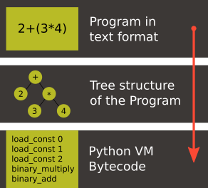

A toy compiler from scratch
May 31, 2020I've always been fascinated with programming languages. It's incredible to me that some programs take the text representation of our ideas and turn them into code that can be executed by the computer.
Wanting to build my own programming languages, I started to write and rewrite lots of little lisp interpreters. That is a common path for beginners. Making these toys gave me better understanding of how programming languages work, but also made me a better software engineer in general. So it's definitely worth the exercise :)
Today I want to share an exercise of designing Effigy, a little toy compiler that targets the Python Virtual Machine. It's far away from being a production level tool, but it's a bit fancier than the Lisp interpreters I mentioned above.
Note: Even though Python is said to be a scripting language, it does
have a virtual machine that executes the bytecode generated by its
compiler. This is where all those .pyc files come from! :)
Effigy takes a syntax that I made up and generates bytecode for that Virtual Machine. Without further ado, let's see how it works!
A 38k feet view of the process
The text representation of the program is parsed into a tree structure that contains the meaning described in the text program. That tree is traversed and the bytecode is emitted.

Because of its simplicity, Effigy doesn't really apply any optimization to either the parse tree or to the bytecode. That's what keeps Effigy in the toy category. At least it will make it easier to understand how it works :)
Both the initial phase, that converts text into a parse tree, and the second phase, that traverse the parse tree and emit code, are built wit Parsing Expression Grammars (or PEGs for short). I learned how to implement the tree scanning used in the second transformation from the article Parsing Expression Grammars for Structured Data. And during the time that I was implementing Effigy, I also found the article PEG-based transformer provides front-, middle and back-end stages in a simple compiler that made me feel more comfortable with my choice and made me tempted to re-write the assembler as a PEG traversal too, but I never got to it.
Although it's not a requirement to understand this post, I highly recommend reading the articles above as they were essential for me to really understand how PEGs could be so flexible and powerful.
The PEG library
Two out of the three of the main components of Effigy are built on top of the PEG implementation. That makes the PEG implementation itself is a pretty important part of this project, so it's worth talking about it with some depth before moving on to the actual compiler.
The main goal of the PEG library is to parse input based on a user-defined grammar and to capture the results when parsing succeeds. That happens in roughly three steps:
- The user-defined grammar is parsed into a grammar tree;
- The grammar tree and the input are fed to the grammar interpreter that traverses the grammar tree and try to match the input. If matching is successful, it generates a parse tree with the captured results;
- The parse tree is traversed and semantic actions are applied;
The first step is a recursive descent parser that is able to understand the syntax of PEG grammars and create a tree that is traversed by the second step. E.g.: Parsing the grammar following grammar:
Number <- [0-9]+
yields the following grammar tree:
{ Number: [[ [{ name: 'oneOrMore' }, [{ name: 'range' }, '0', '9']] ]] }
In that format, lists are considered lists unless their first item is an object. In that case, they're seen as functions and the rest of the elements in the list are considered parameters. That might resemble Lisp's S-Expressions for some! This format is the simplest I found to make the grammar interpreter as simple as possible as well.
In the example above, the grammar interpreter starts from the first
rule of the grammar, Number, that triggers the function
oneOrMore with a thunk of range with its parameters and execute
it until it fails.
The grammar interpreter keeps the cursor of the input as an internal
field that increments when the character under the cursor matches
the piece of the grammar being executed. E.g.: If the above grammar
interpreter receives the above grammar and the input 123, when
oneOrMore calls range for the first time, cursor is
incremented from 0 to 1, when oneOrMore calls range again,
cursor is incremented from 1 to 2 and so forth. Notice that
PEGs don't really need to consume the entire input to succeed. If
you really want a grammar to enforce consuming the whole input to be
deemed successful, you can convey that need with the following
syntax:
Start <- Number !. Number <- [0-9]+
The expression !. (or Not Any) only succeeds if EOF has been
reached.
The list of all operators available are the ones documented in Ford's paper with the extension for parsing lists from Medeiros' paper, and here they are:
Matching Functions:
- Any() -
.: Matches any character but fails onEOF; - Literal(c) -
"c": Fails ifcdoesn't match the character under the input cursor; - Class(c[]) -
[abcd]: Fail if none of the elements ofc[]match the character under the input cursor; - Range(ca, cb)
[a-z]: Fail if the current character under the input cursor isn't between the characterescaandcb;
Parsing Functions:
- ZeroOrMore(fn) - Star Operator (*): Execute
fnindefinitely until it fails. All collected results are returned. It never fails even if it fails in the first call; - OneOrMore(fn) - Plus Operator (+): Execute
fnonce failing if this first call fails. If the first call succeeds, then prepend this result to the output ofZeroOrMore(fn) - Option(fn) - Option Operator (?): Return the result of
fn()ornullif the call tofnfails. - Choice(fn[]) - Ordered Choice Operator (/): Iterate over
fn[], and return the result of the first function that succeeds. It can be seen as an OR operation.
Syntactic Predicate Functions:
- Not(fn) -
!: Return true iffnfails and false iffnsucceeds; - And(fn) -
&: The opposite of Not orNot(Not(fn));
List Parsing Function:
- Open() -
{: Return true if the element under the cursor is a list; - Close() -
}: Return true if the currently open list has ended
Scanner Interface
The parser that implements the PEG interface listed above is built on top of a scanner that provides all the matching functions and the ones that backtracks the input cursor.
This is the interface that the matching functions depend:
- Scanner(input): Constructor that creates a new instance of the scanner taking the input as a parameter;
- Current(): Return what's under the scanner's cursor;
- EOS(): Determine if the current element is the end of the input;
- Error(): Generate a parsing error;
- Expect(e): Return the current element under the cursor if it
matches
eor throw an error otherwise. Doesn't move input cursor; - Match(e): Return the current element under the cursor if it
matches
eand advance the cursor by the size ofe; - Next(): Advance the input cursor;
The parsing function Choice is also implemented in the scanner
because it needs direct control over the input cursor in order to
backtrack before a new option is attempted. E.g.:
// Part of the JavaScript implementation of the scanner function choice(...fns) { const saved = cursor; // input cursor for (const fn of fns) { // Once an alternative succeeds, all the other ones // are discarded. try { return fn(); } // If an alternative fails, the cursor is backtracked // to where it was in the beginning of the choice // operation. catch (e) { cursor = saved; } } // If no alternatives succeed, the choice operation // fails. throw new Error("None of the options matched"); }
The syntactic predicate Not is implemented in the scanner as well
since it backtracks the input cursor after being executed in order
to provide infinite look-ahead.
The recursive descent parser generating grammar trees off PEG grammars is built on top of the scanner interface and the PEG functions (ZeroOrMore, Option, Choice, etc). The separation of the scanner interface from the implementation of the PEG functions allowed the construction of the two different scanners: one for text and another one for other data structures (lists).
To make things a bit less abstract, here's an example of each scanner in action:
Text Scanner
The match function takes a string as its input:
peg.pegc(`Number <- [0-9]+`).match('1234')
which generates:
['Number', ['1', '2', '3', '4']]
List Scanner
The matchl function takes a list as its input:
peg.pegc(` Numbers <- { "Number" { Atom+ } } Atom <- !{ .* } . `).matchl(['Number', ['1', '2', '3', '4']])
which generates:
['Numbers', ['Number', [['Atom', '1'], ['Atom', '2'], ['Atom', '3'], ['Atom', '4']]]]
Semantic Actions
After collecting the results from the matching operations and nesting them following the grammar's structure, the PEG library can also apply custom functions on the results of each rule execution. E.g.:
// JavaScript API for compiling a grammar and binding // semantic actions to the generated parser const grammar = ` Additive <- Multitive '+' Additive / Multitive Multitive <- Primary '*' Multitive / Primary Primary <- '(' Additive ')' / Number Number <- [0-9]+ `; const parser = peg.pegc(grammar).bind({ // The name of the action must correspond to the name // of the rule present in the grammar string. The // function `visit` gives the control over when the // child nodes will be visited. That allows executing // code before and after visiting happens. This is // very useful during the code generation step on // the compiler. Additive: ({ visit }) => { const v = visit(); // Ignore the string '+' return Array.isArray(v) ? v[0] + v[2] : v; }, Multitive: ({ visit }) => { const v = visit(); // Ignore the string '*' return Array.isArray(v) ? v[0] * v[2] : v; }, Primary: ({ visit }) => { const v = visit(); // Remove '(' and ')' return Array.isArray(v) ? v[1] : v; }, Number: ({ visit }) => { const v = visit(); const n = Array.isArray(v) ? v.join('') : v; return parseInt(n, 10); } }); assertTrue(parser('42') === 42); assertTrue(parser('40+2*5') === 50); assertTrue(parser('(40+2)*5') === 210);
One of the effects of the infinite look-ahead, and the backtracking specifically, is that the entire input has to be consumed before deciding if the results are correct or not. In other words, the semantic action application happens as an entirely different traversal after matching is successful.
This is explored in depth in the article Modular Semantic Actions and the general suggestion this implementation follows is that the semantic action application only happens after parsing finishes successfully.
The Compiler
Now that we covered the PEG implementation, we're ready to tackle the compilation process itself!
Parsing the program text
The first stage of the compiler is a PEG grammar that scan and parse the program text and generate an Abstract Syntax Tree (or AST for short) off the syntax I made up. The semantic actions associated with that grammar join lists of characters into words, convert lists of digits into numbers, tweak the shape of the AST to make it less verbose and easier to be traversed and lastly help overcoming two shortcomings of the PEG implementation:
- Handle left recursion
- Decide if a result should be wrapped into the name of its parsing rule
There are a few documented ways to handling left recursion on PEGs. The nicest one I found is via Bounded Left Recursion. That approach is described in depth in the article Left Recursion in Parsing Expression Grammars, but I didn't get to fully implement it, so I put it aside to focus on getting to a working compiler.
The second problem of wrapping captured values with the rule name or not could have been fixed by adding a new operator to the PEG implementation and resolved at the grammar level. But instead I chose to implement that using semantic actions since the code needed was simple although a bit verbose. But everything else worked out pretty smoothly. That's enough of background, let's look at an example. The following code:
fn sum(a, b) a + b print(sum(2, 3))
should generate the following AST:
['Module', [['Statement', ['Function', ['sum', ['Params', [['Param', 'a'], ['Param', 'b']]], ['Code', ['Statement', ['BinOp', ['Load', 'a'], '+', ['Load', 'b']]]]]]], ['Statement', ['Call', [['Load', 'print'], [['Call', [['Load', 'sum' ], [['Value', ['Number', 2]], ['Value', ['Number', 3]]]]]]]]]]]
Notice that fn sum(a, b) { return a + b } outputs the same tree
as fn sum(a, b) a + b. Code blocks accept either a single
statement or a list of statements within curly brackets ({}).
Mapping out scope rules
After generating the AST during the text parsing phase, we need to go through an additional step before translating the AST into bytecode. The scope of every variable needs to be mapped into one of the three categories:
- Local variables
- Global variables
- Free variables
Let's look at the following code snippet to talk about it:
fn plus_n(x) fn(y) x + y plus_five = plus_n(5) print(plus_five(2)) # Equals 7
In the example above, x is declared at the scope created by the
plus_n function and must be available when it's summed to y
within the scope of the anonymous function. The variable y is a
local variable since it gets created and destroyed within the same
scope, but x is a free variable.
Free variables are variables available in the lexical scope that must be kept around to be used when the scope that declared these variables isn't around anymore.
Global variables seem to exist in Python for performance reasons.
The Python interpreter skips look ups on the local scope for names
that are known to be available in the module scope or within the
built-in module, like the name print in the example above.
The process of mapping variables into the aforementioned categories is done by traversing the AST using a second PEG grammar for parsing lists instead of a stream of characters. During that process, a symbol table is built and the AST is annotated with information that allows the translation phase to look up each variable in the symbol table.
The following Effigy snippet
fn plus_n(x) fn (y) x + y
generates an annotated AST that looks like this:
['Module', [['Statement', ['Function', [['ScopeId', 2], 'plus_n', ['Params', [['Param', 'x']]], ['Code', ['Statement', ['Lambda', [['ScopeId', 1], ['Params', [['Param', 'y']]], ['Code', ['Statement', ['BinOp', ['Load', 'x'], '+', ['Load', 'y']]]]]]]]]]]]]
The ScopeId nodes introduced within each scope are used during
the compilation process to look up the nth entry within the current
scope of the symbol table. Here's a simplified view of the list of
fields a symbol table for the above snippet contains:
[{ node: 'module', fast: [], deref: [], globals: [], children: [{ node: 'function', fast: [], deref: ['x'], globals: [], children: [{ node: 'lambda', fast: ['y'], deref: ['x'], globals: [], children: [] }] }] }]
One last thing that might be interesting to mention about scopes is that Python tries to figure out if a variable is a free variable by comparing where it was assigned and where it was used. If it is assigned in the same scope that it's being used, it is a local variable. If it is assigned in an enclosing scope, it is a free variable. If one needs to reassign a free variable in an inner scope, the nonlocal keyword is required to inform the Python compiler that the assignment isn't local.
I chose a slightly different way to allow reassigning free
variables from enclosing scopes. Effigy provides the let keyword
to mark variables as free variables at the outer scope:
fn f(input) { let c = 0 fn next() { value = input[c] c = c + 1 return value } return next } cursor = f("word") print(cursor()) # prints "w" print(cursor()) # prints "o"
I haven't used Effigy enough to know if that was a good choice though :)
I bet there might be a way of bundling the symbol table and generating the code in a single pass, but that wasn't the route I took. Quite a few decisions I made for handling variable scope were inspired by the beautiful write up Dragon taming with Tailbiter, a bytecode compiler for Python and that's the route that Darius Bacon took on his experiment. I highly recommend reading that post. It's enlightening and might help understanding the rest of this post since I won't get into too many details about how Python itself woks.
Output format
Once the AST is annotated by the scope traversal step, it is ready to be fed once again into the second PEG grammar to be traversed once more, but now with the intent of driving the assembler to generate code. In this step, the functions (and modules) in Effigy are assembled into bytecode instructions and bundled into Code objects.
Instances of Code objects store bytecode within the co_code
attribute. They also store metadata, like the number of arguments
a function receives (co_argcount) or the number of local
variables (co_nlocals) for example. The other very important
data Code objects store is tables with values. There's one table
for literal values (co_consts), one for local variables
(co_varnames), one for free variables (co_freevars) and one for
global variables (co_names).
All these tables are indexed with integers and carry PyObject
instances within them. And since functions themselves are
PyObject instances, Code object is a recursive data type.
When the compiler enters a new scope, a Code object instance is created, bytecode is generated and tables are filled with data. When the compiler leaves a scope, the Code object instance is returned and bundled within the outer Code object, up until the module scope, which is the top one.
When code generation is done, the Code object is written into a buffer and a header with the following four 32 bit fields is built:
- magic number
- PEP-552 field (Allows deterministic builds of
.pycfiles) - Modified Date
- Size of the code buffer
The last step is to write the header and the code buffer into a
.pyc file.
Code Generation
Generating the assembly code for filling in the co_code
attributes of Code objects is certainly the biggest task performed
by the compiler. Let's take a look at how the compiler would
generate code for the following expression result = 2 + 3 * 4.
First the following AST is generated:
['Module', ['Statement', ['Assignment', [['BinOp', ['Value', ['Number', 2]], '+', ['BinOp', ['Value', ['Number', 3]], '*', ['Value', ['Number', 4]]]], ['Store', 'result']]]]]
When the translation phase takes the above tree as input, it outputs the following Code object:
{ constants: [2, 3, 4, null], names: ['result'], instructions: [ ['load-const', 0], ['load-const', 1], ['load-const', 2], ['binary-multiply'], ['binary-add'], ['store-name', 0], ['load-const', 3], ['return-value'] ], }
Notice that the load-const instructions have an index of the
constants table as its parameter. That's how the Python Virtual
Machine figures out which constant is being referred and what value
to push to the stack. The binary-multiply and binary-add
instructions pop data from the stack, perform their respective
operations, and then push the result back to the stack. The
instruction store-name pops the value left by binary-add off
the stack and save it into the variable referenced in the names
table. The last load-const is there because all Code objects
must return. And when a return statement isn't explicitly provided
(like in module scopes), null (which represents Python's None)
is returned.
If you want to check out all the other cases that effigy can handle, look at the specs I wrote while I was putting the compiler together.
It's interesting to mention that the semantic actions for AST nodes
that interact with the values tables in the Code object have two
jobs. They have to either save or load values from the tables and
also emit instructions. The semantic action for the Number nodes
is a good example to shown how it's done:
{ Number: ({ visit }) => { // Visit the actual value to join the digits and // convert to a JavaScript integer const value = visit()[1]; // Push the value to the constants table if it // isn't there yet const index = addToTable(attr('constants'), value); // Emit the instruction with the index of the // constant as the parameter to the instruction emit('load-const', index); } }
Assemble binary data
Besides emitting instructions, the assembler has to support back-patching of values that were not known ahead of time. Three little functions on the assembler's interface allowed that to happen:
pos(): Return the index of the current instruction;ref(): Push the index of the current instruction to a list of labels and return the index of the label;fix(label, value): Replace the instruction withinlabelwithvalue.
For the sake of completion, here are the other functions that comprise the assembler's interface (already mentioned on previous sections):
enter(): Enter a new scope, creating a new Code object instance;leave(): Return the Code object built for the current scope and set the enclosing scope as the current one;emit(opcode, argument): Append instruction to theco_codeattribute of the current Code Objectattr(name, value=undefined): Helper function for reading or writing a value to one of the values tables of the current scope;
To not have to deal with binary code the whole time I worked on this toy, I wrote a dummy implementation used for debug purposes that contained actual JavaScript lists, strings and numbers.
After validating that the code generation produced what I intended, I just swapped assemblers and used the one that actually knew how to marshal JavaScript objects into the format that the Python Virtual Machine could understand.
The part of the assembler that marshals JavaScript objects into the binary format that the Python Virtual Machine can read is mostly a translation of the code under Python/marshal.c to JavaScript.
Final Thoughts
As you must have noticed, there's way more information about the architecture of the compiler and the PEG implementation than about how Python works. That's sort of intentional, because my first goal with this little experiment was to learn more about compilers and since Python is the language I know the most, I used knowledge I already had to put it together. That being said, I still learned a whole lot about Python itself on this short journey. Python is indeed a fascinating language and its simplicity matches the beauty of a poem.
Although the compiler actually produces files that can be executed by Python, there's a whole lot missing that I didn't even intend to cover. Here are a few:
- The Effigy compiler has the worst error reporting you can possibly imagine. If an input has a syntax error, it will only give you the index of the character that it can't recognize. If the error is on the translation after the syntax tree has been built, you're going to have to print out the AST and figure it out yourself.
- The Effigy language doesn't support lots of very useful features
provided by Python and required for a minimally comfortable
programming experience, like declaring classes, importing other
modules, creating dictionaries with literals (you can still call
the
dict()function though :D). - As I mentioned before, the code generated isn't optimized in any way, so it will most likely be way slower than code generated by the Python compiler. It's still something I want to do in another exercise, but I bet Effigy won't ever see that improvement.
Although this was just a simple exercise completely focused in
learning more about programming languages and having fun, I am
curious to hear what you think. If this article or Effigy sparkled
your curiosity, don't hesitate in reaching out! Send me an email or
find me on the freenode IRC network (I'm usually hanging out on the
#emacs channel).